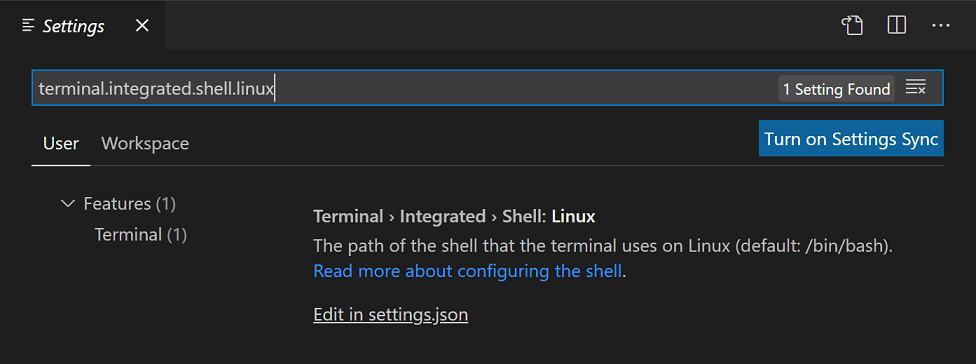
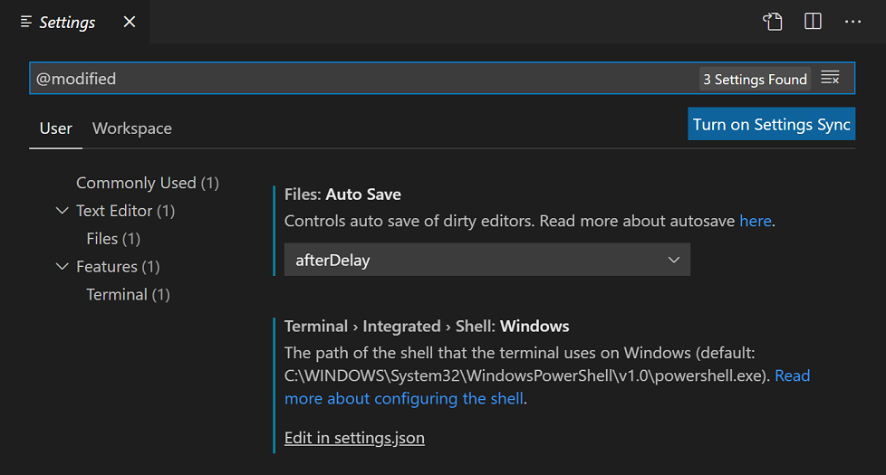
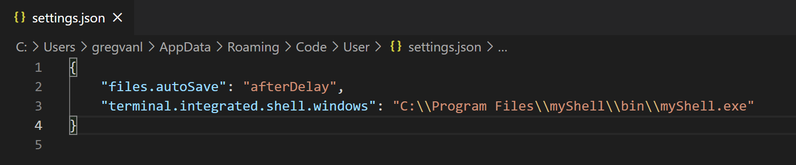
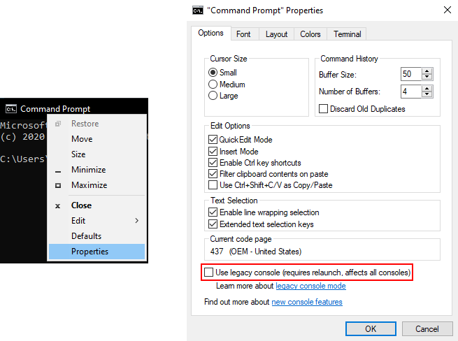

Troubleshoot Terminal launch failures
If you are new to using the Visual Studio Code Integrated Terminal, you can learn more in the Integrated Terminal user guide. There you can read how to configure the terminal, as well as review answers to common questions.
Below are specific troubleshooting steps, if the user guide hasn't helped you diagnose the launch failure. The troubleshooting steps, such as checking your settings and enabling logging, apply to all platforms that support VS Code; macOS, Linux, and Windows.
Note: If you're on Windows, review the common issues on Windows section first.
Troubleshooting steps
To troubleshoot Integrated Terminal launch failures in Visual Studio Code, follow these steps to diagnose issues:
Check your user settings. Review these
terminal.integratedsettings that could affect the launch:terminal.integrated.shell.{platform}- The path of the shell that the terminal uses.terminal.integrated.shellArgs.{platform}- The command-line arguments when launching the shell process.terminal.integrated.cwd- The current working directory (cwd) for the shell process.terminal.integrated.env.{platform}- Environment variables that will be added to the shell process.terminal.integrated.inheritEnv- Whether new shells should inherit their environment from VS Code.terminal.integrated.automationShell.{platform}- Shell path for automation-related terminal usage like tasks and debug.terminal.integrated.splitCwd- Controls the current working directory a split terminal starts with.terminal.integrated.windowsEnableConpty- Whether to use ConPTY for Windows terminal process communication.
You can review settings in the Settings editor (File > Preferences > Settings) and search for specific settings by the setting ID.

A quick way to check if you have changed settings that you might not be aware of, is to use the
@modifiedfilter in the Settings editor.
Most Integrated Terminal settings will need to be modified directly in your user
settings.jsonJSON file. You can opensettings.jsonvia the Edit in settings.json link in the Settings editor or with the Preferences: Open Settings (JSON) command from the Command Palette (kb(workbench.action.showCommands)).
Test your shell directly. Try running your designated integrated terminal shell outside VS Code from an external terminal or command prompt. Some terminal launch failures may be due to your shell installation and are not specific to VS Code. The exit codes displayed come from the shell and you may be able to diagnose shell issues by searching on the internet for the specific shell and exit code.
Use the most recent version of VS Code. Each VS Code monthly release has many updates and fixes and may include integrated terminal improvements. You can check your VS Code version via Help > About (on macOS Code > About Visual Studio Code). To find the latest version of VS Code, go to the VS Code release notes. You may also want to check that you have installed the latest version of your shell.
Enable trace logging. You can enable trace logging and capture a log when launching the terminal. Logging often reveals what is wrong as all arguments used to create the terminal process/pty are recorded. Bad shell names, arguments, or environment variables can cause the terminal to not launch. Keep this log for later if your problem isn't solved.
Additional troubleshooting steps
If none of these steps helped solve the issue, you can also try:
- Ask about it on Stack Overflow, often launch issues are related to environment setup and not a problem with VS Code.
- If the terminal is being launched from an extension, report the issue to the extension by opening the issue reporter (Help > Report Issue) and set File On = "An Extension"
- If you believe it to be a bug with VS Code, report the issue using the issue reporter (Help > Report Issue). The issue reporter will autofill relevant information, see Creating great terminal issues for what else to include in the report.
- If you're on Windows 10 1809 (build 17763) or below, the issue is related to the legacy "winpty" backend. Upgrading to Windows 1903 (build 18362) will move you onto the new "conpty" backend that is built by Microsoft and could fix your problem.
Exit codes
The exit codes displayed in the terminal launch failure notification are returned from the shell process and are not generated by VS Code. There are many available shells that can be used in the terminal and hundreds of possible exit codes. Try searching on the internet for your specific shell and exit code (for example, "PowerShell 4294901760") and you may find specific suggestions or known issues related to your terminal launch failure.
Common issues on Windows
Make sure compatibility mode is disabled
When upgrading to Windows 10, some apps may have compatibility mode turned on automatically. When this happens with VS Code, the terminal breaks as it does some low level things to enable the emulation it uses. You can check and disable compatibility mode by right-clicking on the VS Code executable and selecting properties, then uncheck the Run this program in compatibility mode option in the compatibility tab.
The terminal exited with code 1 on Windows 10 (with WSL as the default shell)
This can happen if Windows Subsystem for Linux (WSL) is not set up with a valid default Linux distribution.
Note: 'docker-desktop-data' is not a valid distribution.
- Open PowerShell and enter
wslconfig.exe /lto confirm WSL is installed correctly and list the currently available Linux distributions within your system. Confirm a valid distribution has (default) next to it. - To change the default distribution, enter
wslconfig.exe /setdefault "distributionNameAsShownInList"
The terminal not working when running the 32-bit Windows client on 64-bit Windows?
The easy fix for this issue is to use the 64-bit version. If you must use the 32-bit version, you need to use the sysnative path when configuring your shell path instead of System32. Adding this setting should fix the issue:
"terminal.integrated.shell.windows": "C:\\Windows\\Sysnative\\cmd.exe"
A native exception occurred
Typically this error occurs due to anti-virus software intercepting and blocking the winpty/conpty components from creating the terminal process. To work around this error, you can exclude the following file from your anti-virus scanning:
{install_path}\resources\app\node_modules.asar.unpacked\node-pty\build\Release\winpty.dll
{install_path}\resources\app\node_modules.asar.unpacked\node-pty\build\Release\winpty-agent.exe
{install_path}\resources\app\node_modules.asar.unpacked\node-pty\build\Release\conpty.node
{install_path}\resources\app\node_modules.asar.unpacked\node-pty\build\Release\conpty_console_list.node
Reporting this issue to the Anti-virus team can also help stamp out the issue all together.
Terminal exits with code 3221225786 (or similar)
This can happen when you have legacy console mode enabled in conhost's properties. To change this, open cmd.exe from the start menu, right-click the title bar, go to Properties and under the Options tab, uncheck Use legacy console.
